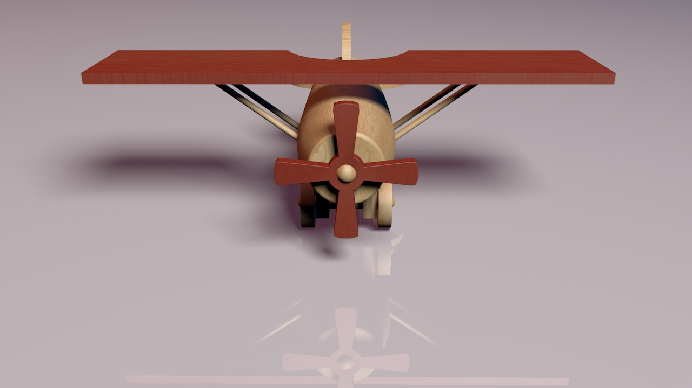

Animation 3D
Il nous a ensuite fallu animer l’avion. Il était pertinent de tirer profit des hélices comme vieille représentation d’avion, j’ai donc animé son décollage de la table basse d’un salon.
Dans le cadre de notre cours de 3D, nous avons dû imaginer un jouet en bois puis le modéliser sous Cinéma 4D. L’idée était de proposer un aspect authentique sans pour autant négliger le fait que le packaging se devait d’être actuel.
Les principales difficultés de ce projet étaient le travail des textures et la mise en place d’un éclairage qui mettrait en valeur le jouet et son emballage.
Il nous a ensuite fallu animer l’avion. Il était pertinent de tirer profit des hélices comme vieille représentation d’avion, j’ai donc animé son décollage de la table basse d’un salon.